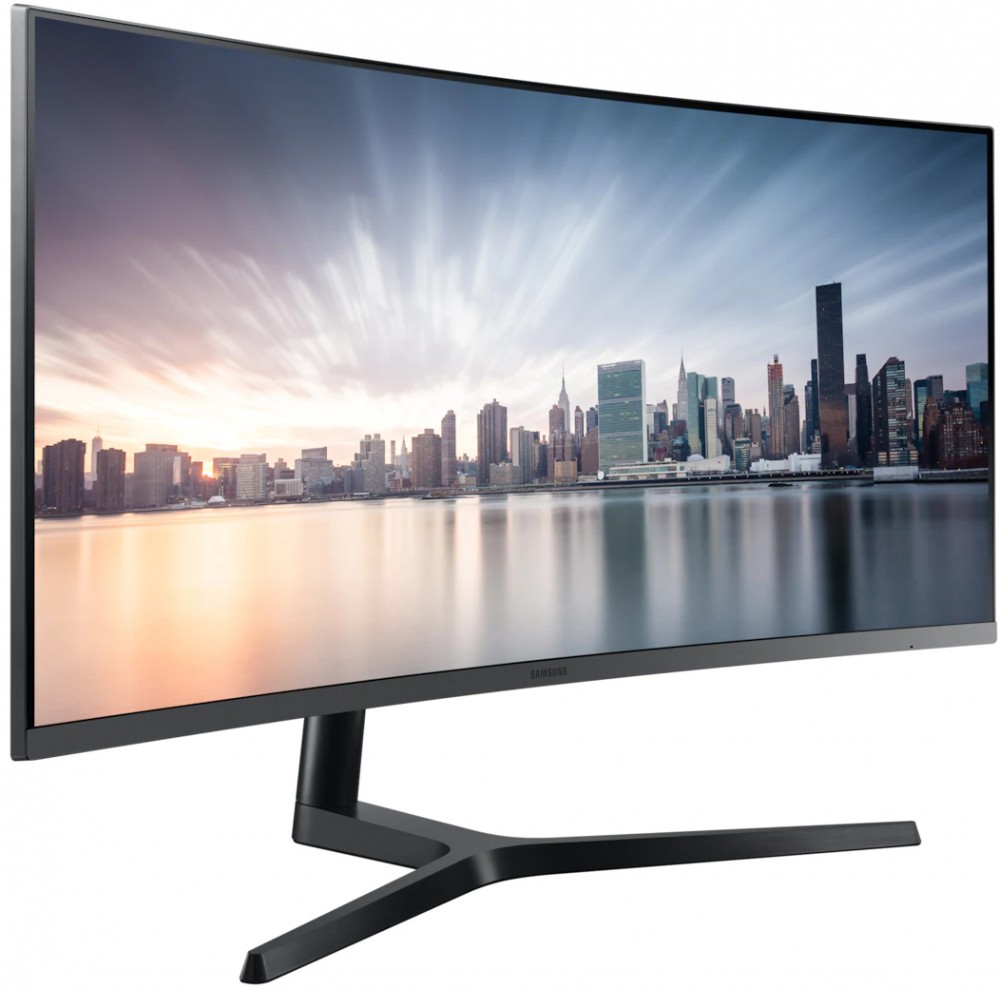

всем привет на моем втором сайте
Собирая новый компьютер, многие часто в первую очередь подбирают видеокарту и процессор, о мониторе задумываясь чуть не в последнюю очередь. А ведь монитор это та вещь, на которую вам придется смотреть практически всегда, когда вы сидите за компьютером. От монитора зависит то, как вы увидите графику игр, какое вы получите впечатление от этого, немаловажным является и то, что от этого зависит ваше зрение. Поэтому при покупке игрового компьютера, стоит выделить бюджет на монитор соответствующего уровня, чтобы получить свою идеальную сборку. В данной статье мы подробно разберем характеристики игрового монитора, учитывая последние тенденции от производителей.
Первое, на что обращают внимание при подборе монитора – его диагональ. Оптимален и распространен диапазон от 21 до 27 дюймов, меньше брать нет смысла, больше можно, но только если вы готовы к этому. При диагонали выше 27 дюймов вам придется слегка вертеть шеей, а цена будет значительно выше. Средним сбалансированным размером считается 24 дюйма, отличные впечатления и от 27-го дюймового. Начальное разрешение, с которым можно брать монитор является 1920х1080 (Full HD). Изображение с таким разрешением будет хорошо смотреться при 21-27 дюймах. При больших размерах монитора в FHD разрешении картинка будет замыленной из-за меньшей плотности пикселей. Поэтому выбирая монитор от 27 и больше дюймов нужно большее разрешение – 2560х1440 (Quad HD). Современные видеокарты вполне способы показывать хороший FPS в этом разрешении. И наконец лидер среди разрешений – 3840х2160 (Ultra HD), оно же – 4K. Брать 4K-монитор имеет смысл только если у вас подходящий, очень мощный компьютер. Цена на такой монитор соответственно высока, а контента пока маловато. Следует помнить, что чем больше разрешение экрана, тем мощнее должна быть ваша видеокарта.
Еще одной из ключевых характеристик монитора является его матрица. Типов матриц очень много, но все вытекают из следующих: TN-матрицы — самые старые и дешевые. Брать монитор с такой матрицей не рекомендуется. Минусы: низкая цветопередача, маленькие углы обзора, низкая максимальная яркость. Из плюсов только наименьшее время отклика. Но брать из-за этого такой монитор не стоит, поберегите ваши глаза. Единственный вариант – ставить такой монитор вторым, третьим, если у вас он уже есть, а выкидывать жалко. Исключение – TN-мониторы с частотой обновления 200 Гц и выше, что пользуется популярностью у профессиональных игроков в динамичные игры. IPS-матрицы — идеальны по цветопередаче, контрастности и углам обзора — 178 градусов. Раньше обладали высоким временем отклика, но сейчас такой проблемы уже нет. IPS-матрицы постоянно улучшались, выпускались различные модификации. Новейший тип называется AH-IPS, в нем улучшена цветопередача, разрешение и PPI, повышена яркость и понижено энергопотребление, время отклика не превышает 5-6 мс. Именно этот тип IPS стоит брать. MVA/VA-матрицы являются середнячками между TN и IPS. Плюс в сравнении с IPS — отличная контрастность, плюс в сравнении с TN — хорошие углы обзора. К тому же хорошая цветопередача и стоимость ниже чем у IPS. Из минусов — большое время отклика, которое к тому же быстро растет при уменьшении разницы между конечным и начальным состояниями пикселя, так что эти мониторы не очень хорошо подходят для динамичных игр.
Время отклика измеряется в миллисекундах и показывает то, сколько времени понадобится монитору, чтобы сменить кадр. Параметр непосредственно влияет на то, сколько сможет ваш монитор отобразить максимум кадров в секунду. Средний показатель на хороших мониторах составляет 5 мс. Больший показатель чреват тем, что изображение будет размытым и оставлять след за движущимися объектами в динамичных играх. Идеально брать монитор с еще меньшим временем отклика – 1-2 мс.
Яркость измеряется в канделлах и отображает количество света, излучаемого полностью белым экраном монитора. Оптимальные значение для игрового монитора – 250-300 кд/м2. Больше – можно, меньше – не рекомендуем. Контрастность монитора бывает статической и динамической. Статическая отображает отношение яркости самой темной и самой светлой точки на экране. Оптимальное значение – 1:1000. Динамическая контрастность это маркетинговый ход, означающий уровень черного при минимальной подсветке (полностью выключенный экран) к уровню белого при максимальной подсветке (яркость на полную). На этот параметр можно не смотреть.
Частота обновления означает сколько раз в секунду монитор полностью перерисовывает и выдает изображение. Чем больше частота обновления, тем плавнее передается движение. Таким образом, если у вас монитор с частотой обновления в 60 Гц, то увидеть на мониторе больше 60 FPS не получится. Например, если ваша видеокарта выдает 300 FPS, а ваш монитор с 60 Гц, то и увидите вы только 60 FPS. Если у вас мощный компьютер, то и монитор имеет смысл брать с частотой 120 Гц и выше. Мониторы с частотой обновления в 120 Гц, 144 Гц, 240 Гц выдают более плавное изображение. Поэтому, если ваша видеокарта выдает в играх, соответственно, 120, 144, 240 FPS или более, то имеет смысл обзавестись таким монитором. Предлагаем вам посмотреть следующее короткое видео, чтобы понять разницу в частоте обновления экрана:
fps в играхПроизводители видеокарт NVIDIA и AMD изобрели технологии динамического изменения частоты обновления изображения – G-Sync (NVIDIA) и FreeSync (AMD). Данные технологии позволяют изменять частоту обновления изображения на мониторе в зависимости от скорости рендеринга кадров в компьютерных играх. Визуально это выражается в заметном увеличении плавности движений при скорости рендеринга 30 — 60 кадров в секунду или даже ниже, что типично для большинства современных игр. Также они избавляют от «разрывов изображения», которые наблюдаются при отключенной вертикальной синхронизации. Отличие G-SYNC от FreeSync в том, что первая технология от NVIDIA и является платной, а вторая технология от AMD и бесплатна, из этого следует, что мониторы с G-SYNC стоят дороже. В игровом мониторе обычно используется одна из двух технологий (а в некоторых и обе сразу), и чтобы она работала у вас должна быть соответствующая видеокарта: от NVIDIA для G-SYNC или от AMD для FreeSync.
Глянцевое покрытие обладает лучшей цветопередачей и более насыщенными цветами, однако при работе на нем хорошо заметны отражения и блики. Матовый экран отличается антибликовым покрытием, в нем вы не увидите отражение и солнце, светящее в экран монитора. Поэтому выбирая монитор оцените то, где он будет стоять, если солнце не будет светить на ваш монитор, то имеет смысл взять модель с глянцевым покрытием, иначе – рекомендуем матовое покрытие.
Один из последних трендов в мире мониторов – изогнутый экран. Мониторы с изогнутым дисплеем повторяют поле зрения человеческого глаза. Поэтому изгиб экрана монитора создает максимально комфортные условия для глаз, которые будут гораздо меньше уставать от продолжительного сидения за компьютером, что подтверждено исследованиями, проводимыми Медицинской школой Гарварда. Помимо этого в таком мониторе гораздо меньше искажений, т.к они обеспечивают одинаковое расстояние от глаза до любых областей монитора. У таких мониторов есть параметр – радиус кривизны (1800R, 4000R, 2300R, 3000R). Чем меньше радиус кривизны, тем больше экран является вогнутым. Так как игровой монитор располагается рядом с нами, то и радиус должен быть минимальным. Максимальное рекомендованное расстояние от монитора равно радиусу кривизны в миллиметрах, т.е если радиус равен 1800R, то мы должны сидеть от монитора на расстоянии не более 1.8 метра. В целом изогнутые мониторы имеют множество плюсов и практически лишены минусов.
Рамки не являются одной из основных характеристик монитора, но вносят важный вклад в общую эстетику. Выбирая монитор, приглядитесь к безрамочным вариантам. Отсутствие толстых панелей с трех стороны от изображения (сверху и по бокам) выглядит очень красиво и современно.
Мы надеемся, что данное руководство помогло вам в вопросе выбора идеального для вас игрового монитора. Перед покупкой такой вещи, которая будет всегда у вас перед глазами, рекомендуем тщательно изучить все характеристики монитора, который вам приглянулся. Посмотрите обзоры на него, почитайте отзывы людей, которые уже приобрели такой монитор. Обратите внимание на производителя – рекомендуем сделать выбор в пользу одного из проверенных брендов
обратно